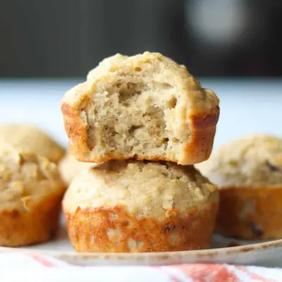

Applesauce Muffins

Ingredients
- 1 cup unsweetened applesauce (240g)
- 1/2 cup plain Greek yogurt (120g)
- 2 eggs
- 1/4 cup unsalted butter, melted and cooled
- 1/4 - 1/3 cup maple syrup
- 1 teaspoon vanilla extract
- 1/2 cup rolled oats
- 1 1/2 cups white whole wheat flour
- 1 teaspoon baking powder
- 1/2 teaspoon baking soda
- 1/4 teaspoon salt
- 1/2 cup raisins (optional)
Steps
- Preheat the oven. Preheat the oven to 375°F. Grease a 12-cup muffin pan or line with muffin liners.
- Combine the wet ingredients. In a large bowl, whisk together the applesauce, Greek yogurt, eggs, melted butter, maple syrup, and vanilla until well combined.
- Soften the oats. Stir in the rolled oats and let the mixture sit for 5–10 minutes. This gives the oats time to soften and absorb some of the moisture.
- Add the dry ingredients. Add the flour, cinnamon, baking powder, baking soda, and salt. Gently stir just until combined. Be careful not to overmix. Stir in raisins if using.
- Bake. Divide the batter evenly among the 12 muffin cups. Bake for 17–20 minutes, or until the muffins are lightly golden and a toothpick inserted into the center comes out clean.
- Cool. Let the muffins cool in the pan for about 5 minutes before transferring them to a wire rack to cool completely.
Recipe by Min Kwon · Kidfriendly Meals, from MJ and Hungryman. Saved here for personal use; the original has the full notes, tips and photos. Open original